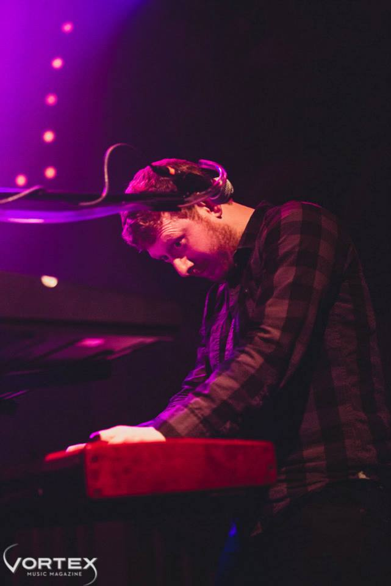
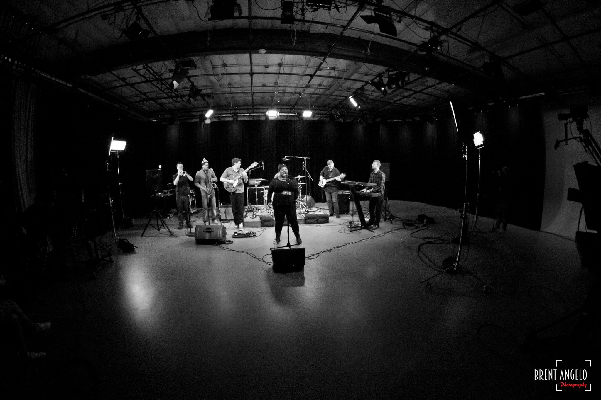
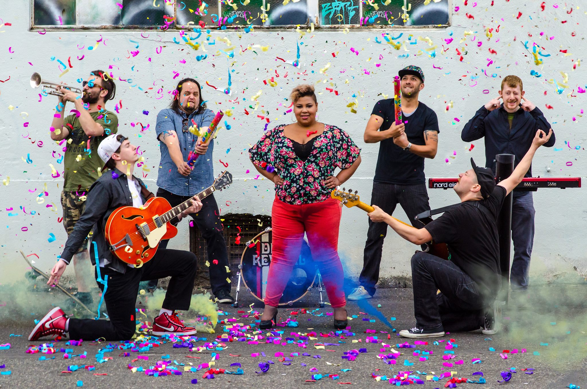
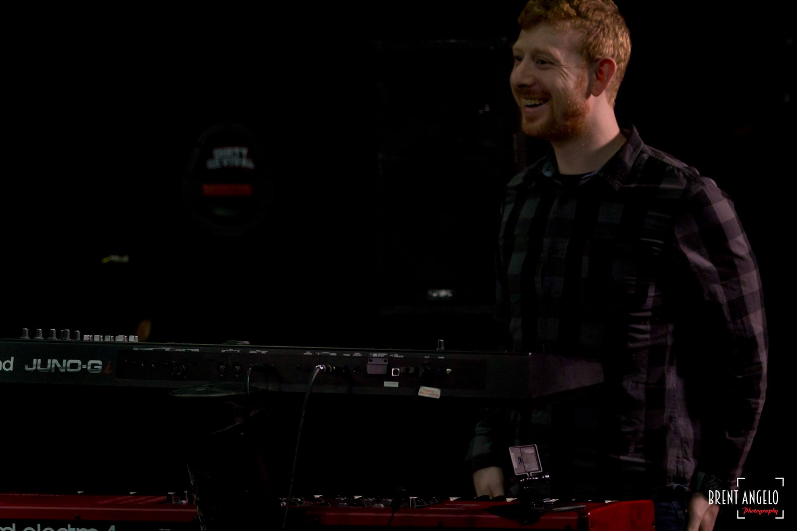

<div class="aboutme">
<div class="aboutme_content">
<br>
<p>
I grew up in NE Portland, OR and went to Grant High School. I completed my B.A. in Mathematics from the University of Oregon and a Masters in Engineering from Portland State University. I have an affinity for music as well as software. I've been developing software since 2010 and playing music professionally since 2001.
</p>

<p>
I have worked with a variety of technologies but I got started in my professional career using C/C++. Not too long afterwards I began moving towards C#. I've used many aspects of the .NET framework from 2.0 to 4.5+ (imagine not using LINQ!). I have a passion about learning and have spent time with PHP, JS Frameworks (such as Knockout and Angular) and Java (see my github for deails). I also work on mobile apps (usually Android). It is enjoyable to make something that can add more convenience to my life. 
</p>
</p>
<p>
I have played music in notable Portland area venues such as The Doug Fir, Mississippi Studios and The Crystal Ballroom. 
</p>

<hr>

<div id="aboutme" class="carousel slide" data-ride="carousel">
  <!-- Indicators -->
  <ol class="carousel-indicators">
	<li data-target="#aboutme" data-slide-to="0" class="active"></li>
	<li data-target="#aboutme" data-slide-to="1"></li>
	<li data-target="#aboutme" data-slide-to="2"></li>
  </ol>

  <!-- Wrapper for slides -->
  <div class="carousel-inner" role="listbox">
  <!--
	<div class="item active">
	  
	</div>
-->
	<div class="item active img-responsive">
	  
	</div>
	<div class="item img-responsive">
	  
	</div>
	<div class="item img-responsive">
	  
	</div>				
  </div>

  <!-- Left and right controls -->
  <a class="left carousel-control" href="#aboutme" role="button" data-slide="prev">
	<span class="glyphicon glyphicon-chevron-left" aria-hidden="true"></span>
	<span class="sr-only">Previous</span>
  </a>
  <a class="right carousel-control" href="#aboutme" role="button" data-slide="next">
	<span class="glyphicon glyphicon-chevron-right" aria-hidden="true"></span>
	<span class="sr-only">Next</span>
  </a>
</div>	
<br>
I also write music (not the lyrics) to songs. Two of which have been made into music videos! <span style="color:#800000">"Dirty Love"</span> and <span style="color:#800000">"Lay Me Down"</span>!
<hr>
<div class="col-md-12 col-xs-12">
<div style="text-align:left">
<div class="widget_iframe embed-responsive embed-responsive-16by9">
<iframe width="100%" height="100%" src="https://www.youtube.com/embed/Pjw-qzT6qBs" frameborder="0" allowfullscreen></iframe>
</div>
<br>Filmed at our old practice house. We invited friends and celebrated good music!
<hr>
</div>
</div>

<div class="col-md-12 col-xs-12">
<div style="text-align:left">
<div class="widget_iframe embed-responsive embed-responsive-16by9">
<iframe width="100%" height="100%" src="https://www.youtube.com/embed/Hp3oAZC1hJ4" frameborder="0" allowfullscreen></iframe>
</div>
<br>Tackling domestic issues we show our versatility by showcasing a more serious side to our craft.
<hr>
</div>
</div>

<p>
If you have questions feel free to contact me for help in software development, web and music services. Have a great day!
</p>
</div>
</div>

<!-- <div id="aboutme_html_content"></div> -->